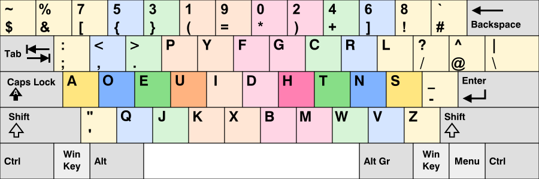

Dvorak, un an après
il y a un an, changé clavier, enfin de layout
Je tapais toujours sur le meme clavier physique
mais les touches n'étaient pas interprétés de
la meme façon par l'ordinateur
Programmer Dvorak

A priori ça parait vraiment stupide
C'est vraiment envie de se compliquer la vie
pour rien. Pourquoi réapprendre
mais ça a ses avantages et la preuve c'est
que je suis bien resté sur ce clavier un an après
et je n'ai aucune intention de revenir sur
qwerty
pourquoi dvorak: opti des touches
1889: patent
1930: dvorak
Pour l'anglais
QWERTY Espagnol
Arrive en fr et boum, azerty.
faute classique lettre q et a
je regarde le clavier pour les lettres
c'est psychologique
QWERTY
regarde qwerty americain
mieux pour coder
je sais que parmis les dev il y en a
qui sont passés sur qwerty et qui en
sont bien content
le prob pas d'accents car en anglais, qui
est une langue simple, il n'y a pas d'accents
QWERTY International
Il y a aussi des bizdevs qui font du qwerty
International. Permet de faire des accents
le changement est minimal entre ces claviers
mais je suis encore concerné par
35 wpm
c'est ridicule, c'est minable
Les RSI(Repetitive Strain Injuries)
ETQDev cela me préocupe car mes mains
sont mon outil le plus important

je pourrais vous montrer des graphes qui montrent
les diff stats entre distance parcourues par les
doigt. Pour moi, le graphe qui me parle le plus
c'est la heatmap
Thin keyboard + high wpm = RSI
- Réduire le risque de RSI
- Augmenter ma vitesse de frappe
- Fatiguer moins mes mains
Touch typing
occas apprndr qqchose de nouveau
je tente pendant un temps
sans changer de clavier
Faire un Typing Tutor
- Tous les jours
- Sans regarder le clavier
- Faire le moins d'erreurs possibles
moins d'erreur car memoire motrice
Mechanical keyboards
Plus long parcours du doigt

Mon expérience
- Imprimmé le layout
- Appris en un mois
- Doublé ma vitesse après 3 mois
- Je continue à l'augmenter aujourd'hui
grace au touch typing j'avais la meme vitess
a peu pres 1 mois et 1 semaine apres
il y a dautres. Parmis eux, colemak
Colemak
Temps apprentissage plus court